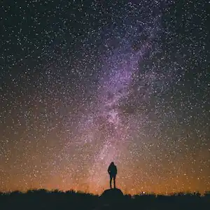
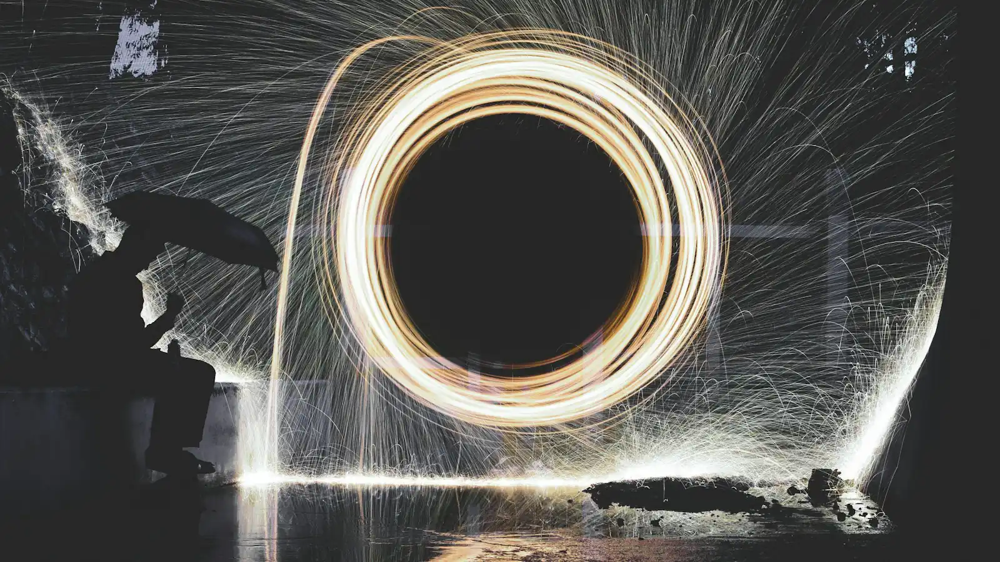
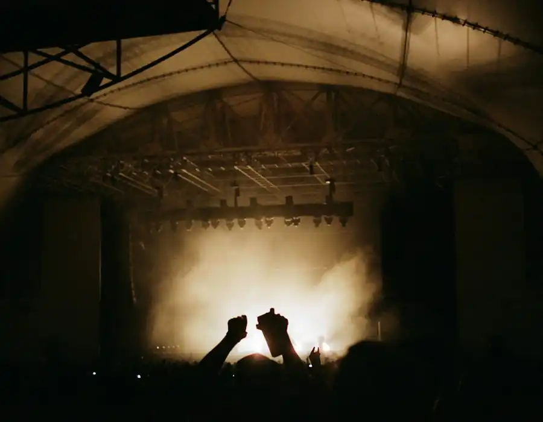
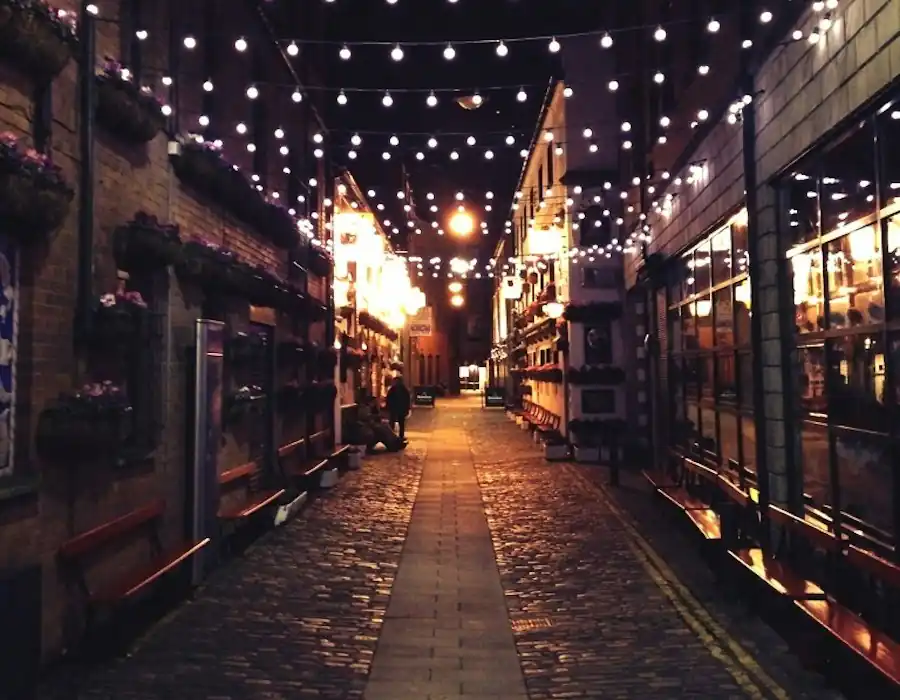

Rio Vega · Single
Creative technologist · Mexico City / Berlin
I build generative visuals.sound toys for the browser.light for live shows.

All pieces 01 / 04
Light installation · 2026
A ring of 240 light bars that breathes with the crowd below it - the louder the square, the faster it turns.

The festival wanted one piece for its main square that people would walk towards from three streets away - and that would not look like a stage when no band was playing.
Eight microphones around the square feed a TouchDesigner patch that turns the noise of the crowd into speed, colour and breath. The ring hangs twelve metres up on two cranes; every bar is addressed on its own, so a wave can run once around it in exactly one bar of the music.
Ninety thousand visitors over four nights, and a square that kept filling after the last concert. The festival bought the ring and brings it back every year.

